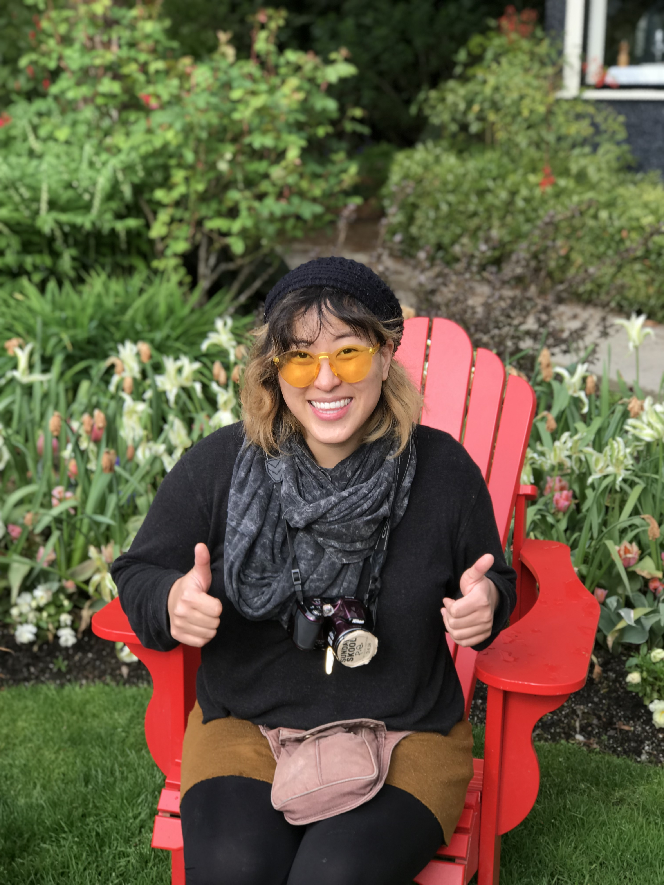

Born and raised in Southern California, I grew up in a Korean-American family in North Orange county and Los Angeles county. There is a large Korean diaspora population in the LA/OC region, which allowed me to enjoy Korean culture and food. Growing up in a diversity hot spot, I grew up with lots of Peruvian friends. I enjoy speaking multiple languages including English, Korean, and Spanish.
I was always interested in art from a very early age, my main accessory for about 25 years of my life was a sketch book. However, raised in a family with a nurse mother and a pharmacist sister, I followed in their footsteps, after studying fine art for 3 years, and switched to focusing on biology with an emphasis in microbiology/anatomy & physiology.
After college, I worked for the California Department of Public Health as a research assistant. This experience lead me into pharmaceutical and clinical research in the bio-tech field. After spending the last decade working in labs and on clincal research projects I decided it was time for a change.
After dragging my feet for years, I finally pushed myself to enroll in a programming course. It took a lot of courage and suppressing my fears to embark into the world of code, but I have so far I have enjoyed my time at Epicodus, located in Portland, Oregon, and have no regrets.
I have to say, it is one of the best decisions I have ever made. I hope you enjoy my work.
"Annie is VERY outgoing, easy to communicate and work with, she is a good listener, and a team player. Generally a pleasure to work with"